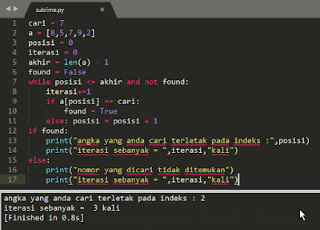
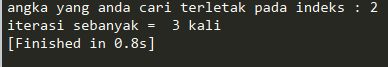
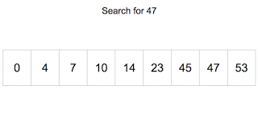
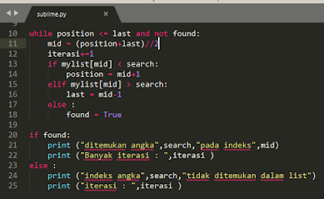

Linear SearchLinear Search atau sequential search adalah sebuah metode pencarian data dengan cara membandingkan nilai yang dicari dengan nilai dari setiap elemen list, mulai dari elemen pertama (indeks = 0) sampai nilai yang dicari ditemukan atau sampai elemen terakhir (indeks - n). Untuk lebih jelasnya perhatikan gambar animasi di bawah ini.
Misalnya kita memiliki sebuah list, anggap saja list a. Di dalam list itu terdapat beberapa elemen yang terdiri dari beberapa angka acak. Katakanlah 8,5,7,9,2. Kita ingin mencari sebuah angka dari dalam list tersebut, misalnya angka 7. Dan juga kita bisa juga sekaligus mendapatkan informasi pada indeks ke-berapa letak angka tersebut berada, berapa kali iterasinya (proses perulangan saat mencari data tersebut). Bagaimana caranya untuk mengimplementasikannya ke dalam bahasa pemrograman seperti python? Yuk kita simak baik-baik.

Pada contoh di atas, mula-mula kita pastikan posisi awal pencarian berada pada posisi 0 atau pencarian dimulai dari indeks 0. Dan menentukan batas akhir pencarian tersebut dengan len(a) - 1. Metode linear search di atas akan mengembalikan nilai True jika nilai yang dicari ditemukan di dalam list dan False jika tidak ditemukan. Tambahkan pengkondisian untuk memastikan agar proses pencarian dilakukan, jika ditemukan ia akan berhenti, dan jika tidak ditemukan ia akan terus mencari hingga seluruh indeks habis diperiksa. Untuk mengetahui letak indeks angka yang kita cari dan berapa jumlah iterasi yang dilakukan tinggal tambahkan saja iterasi = 0 dan masukan iterasi +=1 di dalam proses looping dan print(posisi) untuk mengetahui letak posisi indeksnya, print(iterasi) untuk mengetahui jumlah iterasinya.

Setelah kita run maka angka 7 yang kita cari terletak pada indeks ke-2 dengan iterasi sebanyak 3 kali. Bagaimana? Mudah bukan? jika ada pertanyaan silahkan langsung berkomentar. Silahkan dicoba dengan mengganti elemen list sesuai dengan keinginan hati kalian atau mungkin ada juga yang penasaran bagaimana list tersebut diisikan dengan data string? Selamat mencoba.
Binary Search
Selanjutnya kita akan membahas binary search. Binary Search merupakan metode pencarian data dengan membagi 2 atau pencarian dimulai dari indeks list bagian tengah, lalu membandingkannya. Jika bertemu dengan angka yang lebih kecil dari pada yang dicari, maka langsung dibuangnya, begitu seterusnya hingga nilai yang dicari (==) cocok. Untuk lebih jelasnya, perhatikan gambar animasi di bawah ini.

Perlu diketahui, data list pada binary search sangatlah mengharuskan urut terlebih dahulu sebelum memulai proses pencarian. Secara logaritmik pencarian binary lebih cepat dibandingkan linear search karena dapat mereduksi jumlah elemen yang dicari sehingga iterasi yang dihasilkannya lebih sedikit. Implementasinya ke dalam python :
